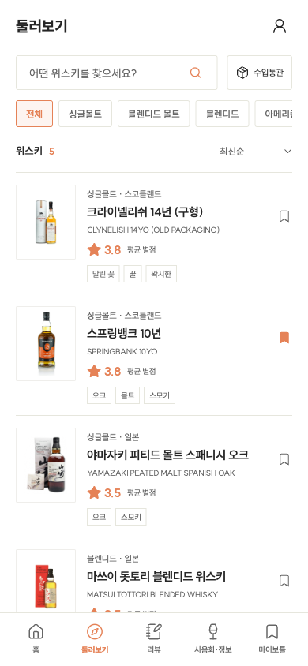
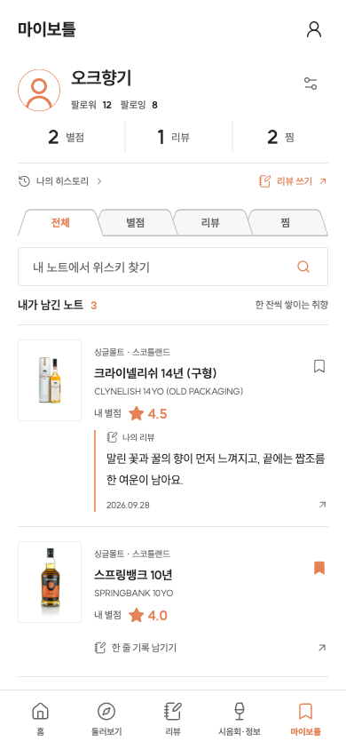
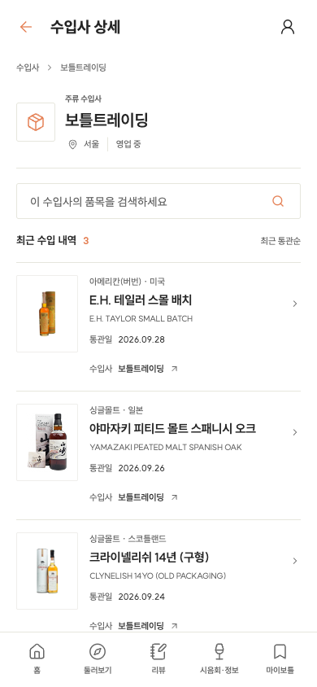
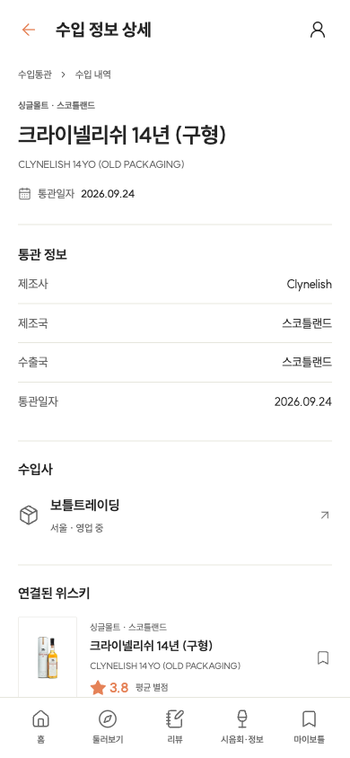
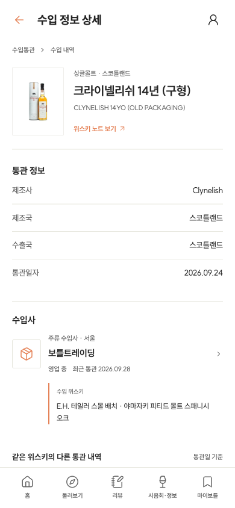

<!doctype html><meta charset="utf-8"><title>화면 톤 비교</title><style>body{margin:0;background:#eee;font:14px sans-serif}section{display:flex;gap:20px;padding:14px}figure{margin:0}figcaption{height:28px}img{display:block;width:390px;height:844px}</style><section id="catalog"><figure><figcaption>기준 · 둘러보기</figcaption></figure><figure><figcaption>수정 · 수입 내역</figcaption></figure></section><section id="profile"><figure><figcaption>기준 · 마이보틀</figcaption></figure><figure><figcaption>수정 · 수입사 상세</figcaption></figure></section><section id="detail"><figure><figcaption>수정 전 · 통관 상세</figcaption></figure><figure><figcaption>수정 후 · 통관 상세</figcaption></figure></section>
